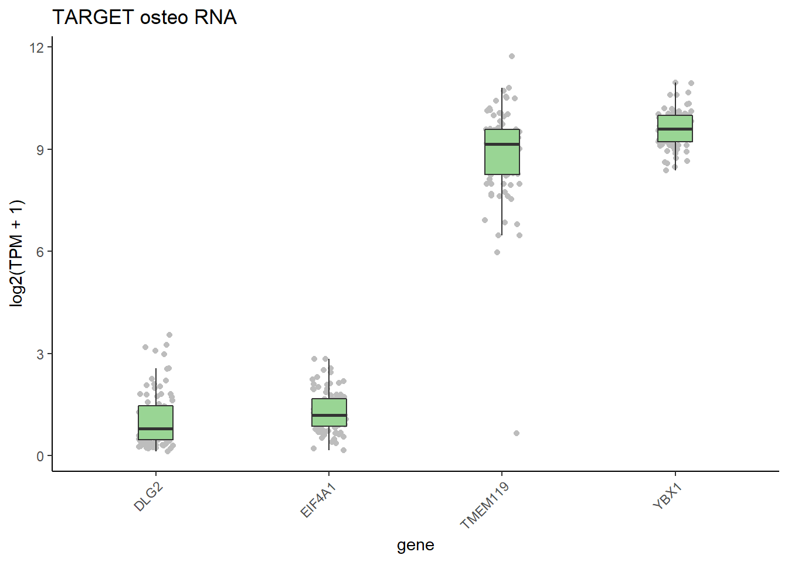

##########################################################################################
library('tidyverse')
library('tximport')
library('RColorBrewer')
library('ggplot2')
library('ggrepel')osteosarcoma RNAseq
This document details the analysis of RNAseq data from osteosarcoma patients as part of the TARGET project. The first think I had to do was to download the counts data from GDC. You can do this by just adding all of those files to your cart and clicking download. You should also download the ‘sample sheet’ as well as we will use it for annotation and file parsing.
Setting up the environment
These are packages you will need for this notebook. For exact versions used, please refer to the session info at the bottom of this notebook.
I want to set a base directory that we can use as a link to the directory where we will do most of the work. I use two directories here because the Workspace is what is pushed to GitHub and contains scripts and plot files, but the Repository is where more of the big data is stored that does not get pushed.
##########################################################################################
generalDatasets = 'C:/Users/chughes/Documents/bccrc/projectsRepository/generalDatasets'
baseWorkspace = 'C:/Users/chughes/Documents/bccrc/projectsWorkspace/sorensenLab/relatedToOthers'
baseRepository = 'C:/Users/chughes/Documents/bccrc/projectsRepository/sorensenLab/relatedToOthers'Now we are ready to proceed with the analysis.
Data processing
The GDC data is provided in individual folders instead of on a file-by-file basis, so first we will build a sample table in order to grab these data.
##########################################################################################
##read in the sample info sheet
sampleInfo = read_tsv(paste(baseRepository, '/sequencing20220629_osteosarcomaRnaSeqForBrian/gdc_sample_sheet.2022-06-29.tsv', sep = ''),
show_col_types = FALSE) %>%
dplyr::rename(folderId = `File ID`, fileId = `File Name`, caseId = `Case ID`) %>%
dplyr::select(folderId, fileId, caseId) %>%
dplyr::mutate(filePath = file.path(baseRepository,
'sequencing20220629_osteosarcomaRnaSeqForBrian',
folderId,
fileId))
##take a look at the data
sampleInfo# A tibble: 88 x 4
folderId fileId caseId filePath
<chr> <chr> <chr> <chr>
1 812128e8-ad90-4712-bbbc-7596f003a0b0 1461fa2c-c223-4fcc-af2b~ TARGE~ C:/User~
2 f9f2204a-d5ea-49ba-a8b7-475187815e93 7b5bee09-ff5f-410e-9411~ TARGE~ C:/User~
3 abf2e6b9-234d-4738-8d12-9cf0a70e969a 4973d6a1-f06a-4041-8c6d~ TARGE~ C:/User~
4 00411dbf-7487-46ff-b26a-85761719779e c9372691-13e4-49a3-999c~ TARGE~ C:/User~
5 d8496e42-c19c-4537-8fb1-a9c6080822b0 70d421c3-5902-4ba7-8c46~ TARGE~ C:/User~
6 6c1b177c-d0db-4b24-b96a-d149e4808cee bccda237-85b3-4029-8a1a~ TARGE~ C:/User~
7 3239332f-b9fc-4ca2-afd5-b927783c8e8d 79a11af7-22f2-4b7e-bb5b~ TARGE~ C:/User~
8 8de6d0ef-6402-4267-940c-226236745e3a 7a86377b-ca40-4ece-a2bc~ TARGE~ C:/User~
9 08e483ea-e335-46f1-b9a6-8ce4ed6c23cf 19d4ef18-a88a-466d-94c2~ TARGE~ C:/User~
10 b88a3ce0-2059-4afc-8c88-84d8664789fc 0d31d9cc-b5af-4f9d-9411~ TARGE~ C:/User~
# ... with 78 more rows##check that all the files in the paths exist
all(file.exists(sampleInfo$filePath))[1] TRUENow we can read in the data and process it for anything of interest.
##########################################################################################
##read in the rna data and reformat it
##I select the tpm values here, but there are other options in these files (e.g. fpkm, or raw counts)
rnaData = tibble()
for (i in 1:nrow(sampleInfo)){
rnaTemp = read_tsv(sampleInfo$filePath[i], col_names = FALSE, skip = 6, show_col_types = FALSE) %>%
dplyr::select(X1,X2,X7) %>%
dplyr::rename(ensg = X1,
symbol = X2,
tpm = X7) %>%
dplyr::mutate(sampleId = sampleInfo$caseId[i])
##
rnaData = rbind(rnaData, rnaTemp)
}
##
rnaData# A tibble: 5,338,080 x 4
ensg symbol tpm sampleId
<chr> <chr> <dbl> <chr>
1 ENSG00000000003.15 TSPAN6 34.0 TARGET-40-PAKZZK
2 ENSG00000000005.6 TNMD 0 TARGET-40-PAKZZK
3 ENSG00000000419.13 DPM1 68.6 TARGET-40-PAKZZK
4 ENSG00000000457.14 SCYL3 7.34 TARGET-40-PAKZZK
5 ENSG00000000460.17 C1orf112 5.58 TARGET-40-PAKZZK
6 ENSG00000000938.13 FGR 5.06 TARGET-40-PAKZZK
7 ENSG00000000971.16 CFH 48.6 TARGET-40-PAKZZK
8 ENSG00000001036.14 FUCA2 60.2 TARGET-40-PAKZZK
9 ENSG00000001084.13 GCLC 5.57 TARGET-40-PAKZZK
10 ENSG00000001167.14 NFYA 39.4 TARGET-40-PAKZZK
# ... with 5,338,070 more rows##save the data
saveRDS(rnaData, paste(baseRepository, '/sequencing20220629_osteosarcomaRnaSeqForBrian/dataset_targetOsteoTpmValues.rds', sep = ''))
write.table(rnaData, paste(baseRepository, '/sequencing20220629_osteosarcomaRnaSeqForBrian/dataset_targetOsteoTpmValues.tsv', sep = ''),
col.names = TRUE, row.names = FALSE, quote = FALSE, sep = '\t')This looks OK. Now we can look at genes of interest, in this case, TMEM119.
##########################################################################################
##read the data for our gene of interest
genesOfInterest = c('TMEM119','EIF4A1','YBX1', 'DLG2')
goi = readRDS(paste(baseRepository, '/sequencing20220629_osteosarcomaRnaSeqForBrian/dataset_targetOsteoTpmValues.rds', sep = '')) %>%
dplyr::filter(symbol %in% genesOfInterest)
##plot the data
ggplot(goi, aes(x = symbol, y = log2(tpm + 1), fill = symbol)) +
geom_point(size = 1.5, color = brewer.pal(3,'Greys')[2], position = position_jitterdodge(jitter.width = 0.2)) +
geom_boxplot(width = 0.2, outlier.shape = NA) +
scale_fill_manual(values = rep(brewer.pal(3,'Spectral')[3],4)) +
labs(x = 'gene', y = 'log2(TPM + 1)', title = 'TARGET osteo RNA') +
theme_classic() +
theme(legend.position = 'none',
axis.text.x = element_text(angle = 45, hjust = 1))
Done for now.
Session info
##########################################################################################
sessionInfo()R version 4.1.3 (2022-03-10)
Platform: x86_64-w64-mingw32/x64 (64-bit)
Running under: Windows 10 x64 (build 19042)
Matrix products: default
locale:
[1] LC_COLLATE=English_Canada.1252 LC_CTYPE=English_Canada.1252
[3] LC_MONETARY=English_Canada.1252 LC_NUMERIC=C
[5] LC_TIME=English_Canada.1252
attached base packages:
[1] stats graphics grDevices utils datasets methods base
other attached packages:
[1] ggrepel_0.9.1 RColorBrewer_1.1-3 tximport_1.22.0 forcats_0.5.1
[5] stringr_1.4.0 dplyr_1.0.8 purrr_0.3.4 readr_2.1.2
[9] tidyr_1.2.0 tibble_3.1.6 ggplot2_3.3.5 tidyverse_1.3.1
loaded via a namespace (and not attached):
[1] Rcpp_1.0.8.3 lubridate_1.8.0 assertthat_0.2.1 digest_0.6.29
[5] utf8_1.2.2 R6_2.5.1 cellranger_1.1.0 backports_1.4.1
[9] reprex_2.0.1 evaluate_0.15 httr_1.4.2 pillar_1.7.0
[13] rlang_1.0.2 readxl_1.4.0 rstudioapi_0.13 rmarkdown_2.13
[17] labeling_0.4.2 bit_4.0.4 munsell_0.5.0 broom_0.8.0
[21] compiler_4.1.3 modelr_0.1.8 xfun_0.30 pkgconfig_2.0.3
[25] htmltools_0.5.2 tidyselect_1.1.2 fansi_1.0.3 crayon_1.5.1
[29] tzdb_0.3.0 dbplyr_2.1.1 withr_2.5.0 grid_4.1.3
[33] jsonlite_1.8.0 gtable_0.3.0 lifecycle_1.0.1 DBI_1.1.2
[37] magrittr_2.0.3 scales_1.2.0 cli_3.2.0 stringi_1.7.6
[41] vroom_1.5.7 farver_2.1.0 fs_1.5.2 xml2_1.3.3
[45] ellipsis_0.3.2 generics_0.1.2 vctrs_0.4.1 tools_4.1.3
[49] bit64_4.0.5 glue_1.6.2 hms_1.1.1 parallel_4.1.3
[53] fastmap_1.1.0 yaml_2.3.5 colorspace_2.0-3 rvest_1.0.2
[57] knitr_1.38 haven_2.5.0